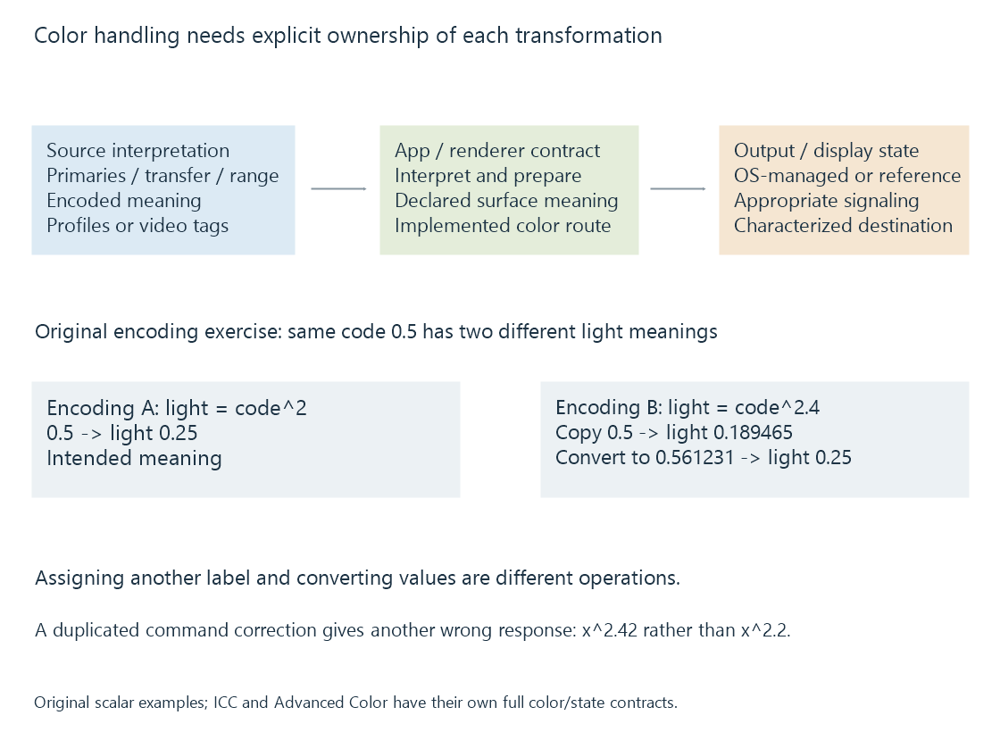

Display color management
Display color management relates the source’s defined color meaning to the current output state through transformations implemented by the application, operating system and display path.
A color value has meaning only within a defined interpretation. The same triplet of RGB numbers can describe different colors under different primaries, white references and transfer functions.
Display color management connects that source meaning to the behavior of the selected output. It requires more than choosing a monitor with a wide gamut.
Numbers first need an interpretation
A video source may describe its primaries, transfer function, YCbCr matrix and range through its stream/container signaling. A still image may carry an ICC profile.
The player needs to interpret those properties before deciding how to present the source. Assigning a different description to unchanged numbers is not the same operation as transforming numbers to preserve their color meaning.
For example, marking values as wide-gamut RGB without converting their interpretation does not automatically preserve the original narrow-gamut colors. It changes what the values are said to mean.
Video color signaling and ICC profiles describe those source declarations.
Assigning a label and converting values differ
Use an original scalar tone-encoding exercise, with color primaries omitted. Encoding A means light equals its code squared; Encoding B means light equals its code raised to 2.4.
Code 0.5 in A therefore describes light 0.25. Copying code 0.5 unchanged into B describes approximately 0.189465.
To preserve light 0.25 in B, calculate its required code:
codeB = 0.25^(1/2.4) = 0.561231
codeB^2.4 = 0.25
Relabeling the unchanged code changes its meaning. Converting the code preserves the modeled light relationship. Real color conversion also needs the source/destination primaries, reference state and mapping limits.
A transform relates two characterized spaces
A traditional ICC route uses a source profile, a profile connection space and a destination profile. The destination describes the display’s characterized state. The transform computes destination values intended to reproduce or map the source colors.
The working values may be linearized before color-basis transformations, then encoded for output. Applying a linear-light operation directly to nonlinear encoded values can produce a different result.
A calibrated video route can instead target an established reference color space. It need not apply an ordinary per-image ICC transform at every stage if the output is already set up for that reference.
These are different implemented arrangements for maintaining intended color relationships.

Application and operating system share responsibilities
| Route | Relationship to establish |
|---|---|
| Traditional color-managed application | App interprets the source and transforms for its destination profile |
| Calibrated reference video output | Renderer produces the intended reference representation for that output state |
| OS-managed Advanced Color | App declares a supported surface interpretation; the OS composes/maps it into the current managed output |
Microsoft documents that Advanced Color changes traditional ICC behavior. Its managed routes distinguish application color conversion from display calibration and output handling.
Consequently, an ICC profile being installed does not imply every app applies the same conventional transform. Nor does a managed OS output mean an application can label arbitrary values incorrectly and expect the system to infer their intended meaning.
For an Emby client, the renderer, platform and selected presentation mode determine the implemented relationship. A browser player and a native video renderer can enter the output pipeline differently.
Why a correction applied twice is different
Use an original scalar model from calibration. A display has actual response L = u², while the target for source value x is x^2.2. One correction sends u = x^1.1.
At x = 0.5, one correction gives luminance approximately 0.217638.
If the same command correction is mistakenly applied again, the command becomes:
u = (x^1.1)^1.1 = x^1.21
Actual light = u² = x^2.42
At x = 0.5: L ≈ 0.186856
The result no longer matches the intended x^2.2 target. This is an invented calculation illustrating duplicated responsibility, not a report that a particular app or OS performs it.
The converse problem is a required transformation being omitted. Correct output depends on establishing which stage owns each operation.
HDR adds a luminance interpretation
PQ describes a relationship to absolute luminance. A managed desktop can also need to place SDR interface white at an appropriate reference level alongside HDR content.
Converting color primaries alone does not solve that luminance relationship. Tone mapping, reference-white handling and the selected output representation remain relevant.
Microsoft’s Advanced Color documentation describes surface-format/color-space combinations and their interpretation. Those API choices are factual examples of an implementation contract, not universal configuration instructions for every media app.
HDMI HDR signaling covers the later signal sent to a connected display. Correct source metadata, correct surface interpretation and correct output signaling are three connected conditions.
Display changes alter the destination
Moving a player window to another screen can change the output gamut, luminance, profile and active HDR state. A route that was correct for the first screen may need updated destination information.
A desktop screenshot records a representation captured at a particular pipeline stage. Viewing that screenshot later through another application/display is another color route, so it is not automatically a measurement of the first screen’s emitted light.
See Also
- Display color calibration
- ICC color profiles
- Video Color Tags and Signaling
- Limited and Full Video Range
- HDMI HDR signaling